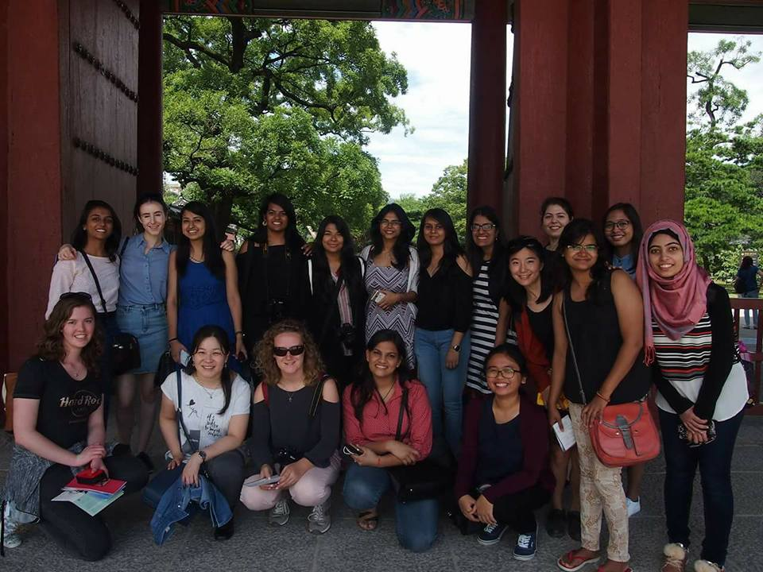
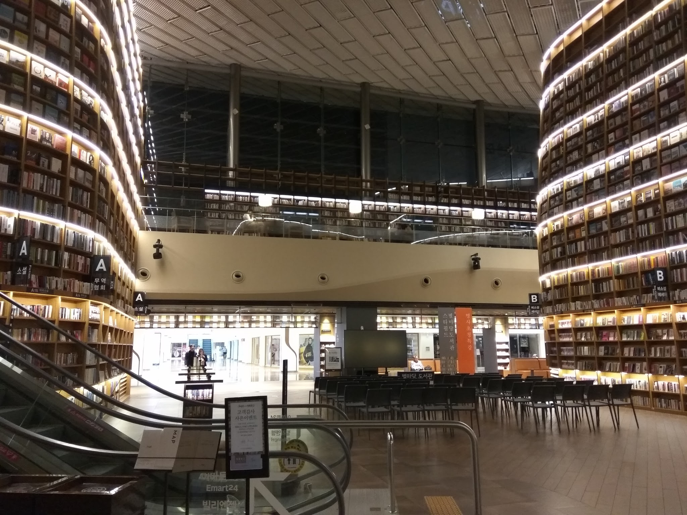

Life is full of unexpected surprises. There are many opportunities when one can secretly wish for something exciting to happen – something out of the ordinary. The real surprise is when the wish unexpectedly comes true. The same happened to me on the night of 18th July when I received an email from the Women Techmakers Scholars Program Team, congratulating me for being selected as a scholarship recipient. Wow !!! I could feel the adrenalin rushing up my body. I was among the 71 scholars of the APAC region and was awarded a scholarship and an opportunity to attend the Scholars’ Retreat at Campus Seoul of Google.
What is Google Women TechMakers Scholarship?
This program which is formerly known as the Google Anita Borg Memorial Scholarship Program - Google is an academic scholarship, awarded based on academic performance, leadership, and impact on the community of women in tech. This Scholars program consists of the following elements : Scholarship, Retreat and the Community. The application opens for this scholarship in April and the process involves answering some essay questions followed by an interview by a google engineer (only after you get shortlisted).
The Scholarship Retreat
The Retreat was scheduled on August 29th - September 1st at Seoul, South Korea. Google had organized everything like our flight tickets, meals and accomodation. Google had made great arrangements for us to stay at Intercontinental Grand Seoul Parnas and each one of us was assigned a roommate from a different country. I was very excited and was counting down for the upcoming retreat to meet the 70 other passionate scholars from 13 different countries. I reached Seoul on the night of 28th along with 10 other scholars from India. I met with my roommate Alanna who was from Australia and we bonded really well.
Seoul Searching
We planned a day out exploring Seoul on 29th August with few of the scholars who had arrived earlier. We visited Changgyeonggung palace along with the Changdeokgung Palace and the secret garden. We also explored the local market area , Insadong and visited Bukchon Hanok Village. It was great fun exploring the places and culture of the city along with the fellow scholars sharing the experiences in technology, community and life.

DAY 1 - August 29th
The retreat kicked off with a welcome dinner at Grand Intercontinental Coex hotel. Each one of us was assigned a table number and each table had a group of scholars from different countries. It was very inspiring talking to the fellow scholars about their challenges and their involvement in the community. The dinner was followed with a Karaoke night where we Indians performed on a bollywood song which was enjoyed by everyone . The night ended with a wonderful performance on Gangnam Style by Han Gyul (google recruiter of South Korea).
Day 2 - August 30th
The first day started with a few mins ride to the Google office followed by the breakfast and an energiser for 15 mins. We were taught the steps of k-Pop on the famous korean song Cheer up.
There were sequence of activities planned out by the Googlers for us to participate and learn which are listed below :
- Opening Keynote : The session started with an opening keynote by Georgia who introduced us to the vision of Dr. Anita Borg of promoting women in the field of technology and inspired us to continue contributing to the community.
- Open House - Stories of Success, Tales of Fails : The session followed with an exercise where we were divided into teams of 9 (Mine was Team Yellow) and each one of us shared a story of success followed by a story of failure. It was a great experience listening to the challenges faced by the leading women in tech and how they overcame it.
- Office tour : The office tour boosted up the energy level of every scholar. Google Office is the most comfortable place to work. There were the massage rooms, Sleeping quarters, Multiple micro kitchens with free food, small café and lunch cafeteria, Nice lounges, sitting areas and beautiful google signs, Tech rental space where you can take gadgets home such as headphones, usb or power cables, Play room with table tennis, video games, hula hoops, exercise bike, meditation rooms etc.
- Tech Talk : The session continued with a tech talk by the head of Search team, Brad Park. He introduced us to the search feature of Google as well as the latest technologies introduced by Google like Google Home, Google watch and Google Assistant.
- Lunch : We had the varieties of Korean Food prepared by the Google Chef’s at the Cafe Maroo of the office.
- Bias Bursting : Lunch was followed by a bias bursting event where we were given 3 scenarios and we had to role-play the part of the Receiver, Bystander, Actor and observer. This event taught us to promote diversity while respecting everyone by keeping aside the jealousy.
- CS Unplugged : This was my favourite workshop conducted by a former scholar, Caitlin. The CS Unplugged doesn’t involve computers and it aims at teaching the core algorithms and concepts and computational thinking skills using the fun activities. The activities included the binary numbers using paper dots, Parody exercise, making paper planes in teams and flying it in 3 sprints. This was aimed to make us learn about the Software Agile development in 8 minutes.
- Googler Panel : This was the most awaited session that I had been waiting for. Four of the female Googlers discussed about their challenges, achievements and journey to computer Science. They focussed on the importance of diversity, issue of gender inequality followed by an advice to work in Google. The discussion inspired me with confidence and motivated me to work harder.
- Dinner : The day ended with a dinner at a traditional Korean Restaurant. We were served local dishes that included soft tofu, Vegetable & Perilla seeds salad, Kimchi Pancake, Mushroom Soup, Tofu Steak, Glass Noodle , Dessert along with red wine (:P) .

DAY 2 - August 30th
The second day started with the breakfast at the Google office followed by the energiser. We continued learning the K-pop dance steps. There were a lot of activities planned by the Google which included :
- Former Scholars Panel : The session started with an intuitive and thoughtful panel by former scholars who discussed about their challenges, their outreach activities and involvement in the community and motivated us to stay in contact with other scholars and to believe in ourselves.
- Lighting Round — APAC projects : The session initiated by the Googlers from different parts of the APAC region who introduced us to different features of the Google products like Google Slides, Google docs, Allo, Chrome, Augmented Reality and Google Cloud. The part that I liked most was the Project Explore feature of Google docs which will suggest content, picture and presentation styles.
- Google Programs and Opportunities : They discussed about the application process for an internship/ job at Google and their deadlines.
- Big query Codelab : BigQuery is Google's global-scale data analytics platform. It is a No-Ops Data Warehouse, Highly Available and Fast with the Convenience of SQL. This workshop introduced us to some BigQuery basics and we had a live coding session with the whole audience, analyzing the whole Wikipedia for interesting insights.
- CodeJam Kickstart : We had a demo CodeJam contest where we had 2 problems to introduce everyone to the platform of the CodeJam. They advised us to participate in all the contests as it is a good example of the google interview process and is the perfect way to prepare for the interview.
- Free Time : The day ended with the announcements and we were dropped at the hotel. We explored the hotel and the mall connected to the hotel(which had a huge library) and then, went for the shopping to the Myengdong and Dongdaemon markets. The best thing that I liked about the market was the tourist office in the market. Just in case you don't know where you are heading or you just get lost, there are Mobile Tourist Officers who are very helpful to guide you on your direction.

DAY 3 - August 31st
Time flies when you are having fun. This was already the last day of the retreat and this day was meant for bonding and making memories. The day initiated with a breakfast at the office followed by the energiser where everyone performed on the complete K-pop song.
- Interview and resume workshop : The session started with a resume workshop where the Googlers advised on how to build a resume mentioning the key points. This was followed by a mock interview which was focussed on the thought process instead of simply writing the codes. The two key points were to think out loud and ask questions.
- Closing Talk : The retreat ended with a closing talk by the head of the APAC recruiting, Dan who thanked everyone of us to be a part of the retreat and motivated us to follow our passion. This was followed by a Group picture with all the smiling faces saying “Kimchi” :P.
- Seoul Searching : This was the most exciting event organized by the googlers where we went for a scavenger hunt along with our team and 1 googler. Our task was to get a picture with everything that was mentioned in the list and return to the office in 4 hours. It was great fun exploring the city , interacting with the fellow scholars.
P.s - Our team (Team Yellow) won the scavenger hunt :D
Overall Experience
Those 4 days were the best days of my life. I never believed that something like this could ever happen to me, such a thing that would make me stop and look back at the events in awe. An experience like this made me think about my place in life. This retreat introduced me to the support network by introducing me to the Google mentors, Google engineers, former scholars and my fellow scholars where each one of them had their own inspiring stories of success and failures. My network of incredible women in technology grew and it changed my outlook on life and motivated me to build the skills and develop my profile as a leader in the community. Also, I got lots of goodies from Google :D.
Lesson Learnt
Just believe in yourself, You will be unstoppable. :)